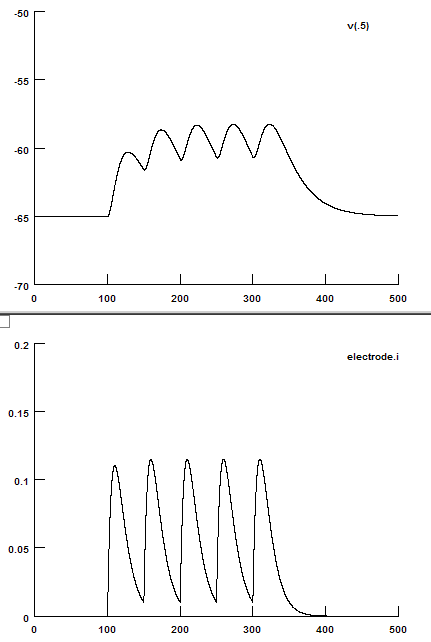

//======================================
// File Name: 3_TemporalSummation.hoc
// Assemble Temporal Summation Box
//======================================
// Start of the box
temporalSummationBox.intercept(1)
{
//======================================
// Control panel
xpanel("", 0) // Start the panel("Title", 0: vertical lay out)
{
xlabel("After simulation") // Display "After simulation"
// Measure temporal summation
xbutton("Measure Temporal Summation","MeasureTemporalSummation()")
}
xpanel() // Close the panel
//======================================
// Add the run control panel
load_file(1, "RunControl.hoc")
}
temporalSummationBox.intercept(0)// End of the box
//======================================
// Set Alpha current
proc SetAlphaCurrent() {
print "Set alpha current"
numPts = experimentDuration/dt + 1 // Calculate total number of points
iVector.resize(numPts) // Change the size of iVector
iVector.fill(0) // Initialize iVector
intervalPts=50/dt // Number of points between two injections, 50 ms
startPts=100/dt // The start point for the first injection
alpha=0.1 // 10 ms
amp=0.03 // [nA]
for(j=0; j<5; j+=1) {
k=0
for(i=startPts+j*intervalPts; i<iVector.size; i+=1) {
relativeTime=k*dt
iVector.x(i)+=amp*relativeTime*exp(-alpha*relativeTime)
k+=1
}
}
}
//======================================
// Measure temporal summation
proc MeasureTemporalSummation() {
vMean = vVector.mean(50/dt, 100/dt) // Baseline
vMax1 = vVector.max(100/dt, 150/dt) - vMean // First EPSP
vMax5 = vVector.max(300/dt, 350/dt) - vMean // Fifth EPSP
temporalSummation = (vMax5-vMax1)/vMax1*100 // Temporal summation
print "Temporal Summation = ", temporalSummation, " (%)" // Display dat
}
Alpha Summation
